Workflow: CosMX data analysis
This workflow is part of a series of vignettes illustrating analysis workflows for spatial transcriptomics data using the OSTA ecosystem. OSTA is a textbook aimed at providing practical guidance for the analysis of spatial transcriptomics data using Bioconductor packages. The book is available at this link, a preprint of the book is available at this link, and the code repository is at this link.
This workflow extends the existing workflow present in OSTA book, with additional details specifically suited for the BBCC25 conference.
Instructors:
- Dario Righelli1
- Francesca Calanca2,3
- Emanuela Scafuri2,3
1 Department of Electrical Engineer and Information Technology,
University of Naples “Federico II”, Italy
2 Department of Chemical, Materials and Production Engineering,
University of Naples “Federico II”, Italy
3 Institute for Applied Mathematics “M. Picone”, IAC-CNR, Naples,
Italy
Introduction
In this demo, we will analyze a 1k-plex CosMx data (Bruker) of a mouse brain sample, see other datasets at this link for additional examples and exercising yourself. Main shown steps are quality control and preprocessing, cell type annotation, identification of marker genes, and cell-cell interaction analysis.
Dependencies
We now load all the required libraries.
library(DESpace)
library(ggplot2)
library(OSTA.data)
library(patchwork)
library(pheatmap)
library(scater)
library(scrapper)
library(scRNAseq)
library(sf)
library(SingleR)
library(SpaceTrooper)
library(SpatialExperiment)
library(SpatialExperimentIO)
library(spatialFDA)
library(SpatialFeatureExperiment)
library(spdep)
library(Voyager)
# set seed for random number generation
# in order to make results reproducible
set.seed(112358)Load data
We load the dataset which was pre-stored in the
OSTA.data package. The dataset contains about 50,000 cells
profiled for about 1,000 RNA targets. We then use the
readCosmxSXE function from the
SpatialExperimentIO package to read the data into a
SpatialExperiment object. Then, it is possible to adapt the
dataset to work with SpaceTrooper by updating the object
and reading the cell polygons (this process is optional if we don’t need
the polygons).
# retrieve CosMx dataset from OSF repo
id <- "CosMx1k_MouseBrain2"
pa <- OSTA.data_load(id, mol=FALSE)
dir.create(td <- tempfile())
unzip(pa, exdir=td)
cos <- readCosmxSXE(td, addTx=FALSE)
# prepare data for 'SpaceTrooper'
cos <- updateCosmxSPE(cos, td, sampleName="CosMx")
cos <- readAndAddPolygonsToSPE(cos)
cos$in_tissue <- TRUE # artifact to work with ggspavis
cos## class: SpatialExperiment
## dim: 950 48556
## metadata(4): fov_positions fov_dim polygons technology
## assays(1): counts
## rownames(950): Chrna4 Slc6a1 ... Cck Aqp4
## rowData names(0):
## colnames(48556): f1_c1 f1_c10 ... f99_c98 f99_c99
## colData names(22): fov cellID ... polygons in_tissue
## reducedDimNames(0):
## mainExpName: NULL
## altExpNames(1): NegPrb
## spatialCoords names(2) : CenterX_global_px CenterY_global_px
## imgData names(1): sample_idIn alternative, it is possible to directly load imaging-based
technologies dataset using the SpaceTrooper package with one of the
following commands. Note that for adding the poligons to the
SpatialExperiment object, you can use the
readAndAddPolygonsToSPE function as shown above, or just
use the keepPolygons=TRUE argument (for xenium and merfish) in the
reading functions.
cos <- readCosmxSPE(td, sampleName = "CosMx")
cospro <- readCosmxProteinSPE(td, sampleName = "CosMxProtein")
xen <- readXeniumSPE(dirName = "path/to/xenium/data", sampleName = "Xenium", keepPolygons = TRUE)
mer <- readMerfishSPE(dirName = "path/to/merscope/data", sampleName = "MERSCOPE", keepPolygons = TRUE)Once loaded, you can access additional metadata of the
SpatialExperiment object cos as follows: - colData(cos):
cell-level metadata, including FOV ID, cell area, and QC metrics. -
alternatively, you can directly access a specific metadata column with
cos$<column_name>. (e.g., cos$fov gives
the FOV IDs for each cell). - rowData(cos): gene-level metadata,
including gene names and biotypes. - assays(cos): names of the assays
available in the object (e.g., “counts” for raw counts, “logcounts” for
log-normalized counts if available). - spatialCoords(cos): spatial
coordinates of the cells.
Basic Visualization
We can have an overview of the data, by plotting the spatial distribution of the cells, represented by their centroids. This is useful to have a global bird’s-eye-view of the tissue.
plotCentroids(cos)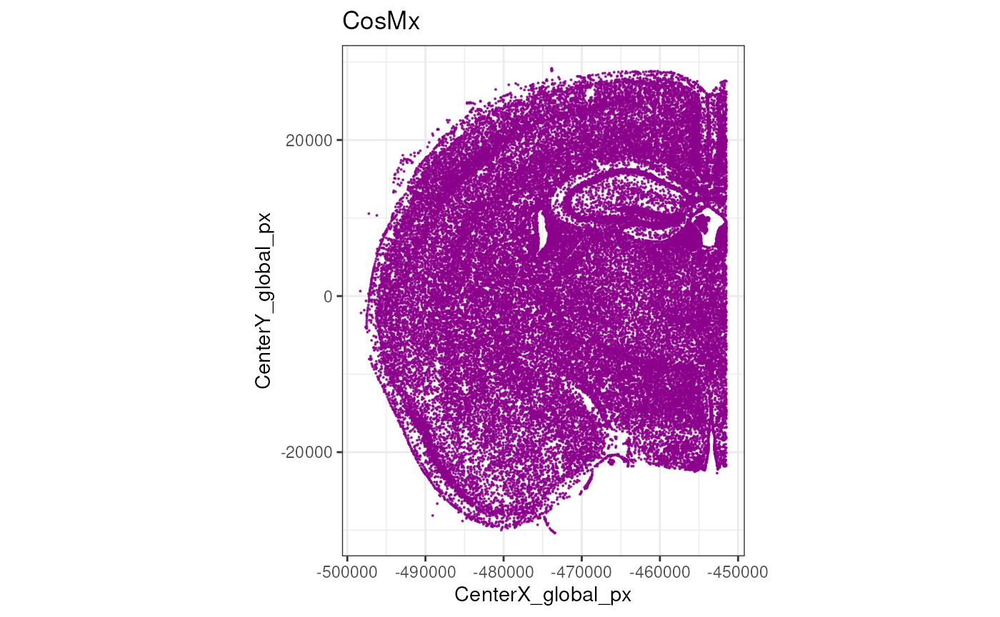
Unlike, Xenium and MERSCOPE, CosMx does not stitch fields of view (FOVs) in a single image, but rather treats each FOV independently. It is therefore useful to visualize a map of the FOVs to understand their spatial arrangement.
plotCellsFovs(cos)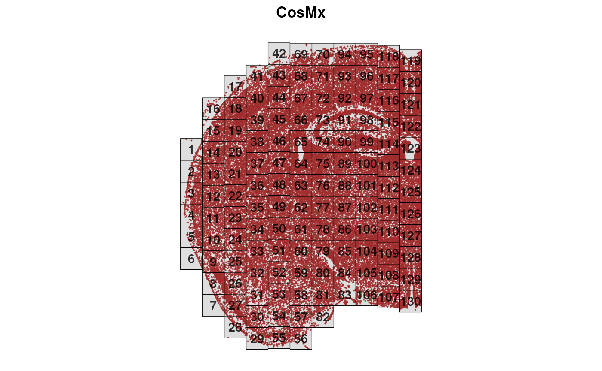
Excercises:
- Explore the
cosobject usingcolData(cos),rowData(cos), andassays(cos). - How many cells and genes are in the dataset? (hint: use
dim(cos)) - Explore the cell metadata. What information is available for each cell? Do you recognize something specific to CosMx data?
- Check the distribution of counts across cells. Are there any cells with very low counts?
- Extract the spatial coordinates of the cells using
spatialCoords(cos). What is the range of the x and y coordinates? - plot the centroids of the cell using
plotCentroids(cos). Colouring them for a specific cell metadata. -
BONUS: Load a different Xenium dataset from the
OSTA.datapackage for further analysis (use theJanesick_breastCancer_Xenium_rep1). This could be heavy to load for your laptop if you think to do it together with the cosmx dataset.
Quality Control
Quality control (QC) is a crucial step in imaging-based spatial transcriptomics, just as it is in scRNA-seq, where it helps remove low-quality cells and reveal technical or biological biases at the sample, field-of-view (FOV), or slide-area level.
A key difference, however, is that imaging-based ST platforms typically do not quantify the whole transcriptome—or even an unbiased subset of it—but rely instead on predefined gene panels. These panels, depending on platform and experimental goals, may be pan-tissue or focused on specific tissues or cell types. Their size varies widely, from a few hundred genes (e.g., 313 genes in the first Xenium panel) to several thousand (e.g., the Xenium 5k panel or the CosMx 6k and 18k panels). As a result, unlike sequencing-based assays, imaging platforms may not provide enough ribosomal or mitochondrial transcripts to compute standard QC metrics. They do, however, include sets of negative probes that allow detection of non-specific RNA capture.
Finally, imaging-based ST technologies also offer rich morphological information (e.g., cell area, eccentricity) and signals from antibody stains—such as nuclear or membrane markers—which can further support QC and downstream analyses.
Here we compute the cell-level QC metrics using the
SpaceTrooper package.
old <- names(colData(cos))
lys <- c("NegPrb", "Negative", "SystemControl")
cos <- spatialPerCellQC(cos, rmZeros=TRUE, negProbList=lys)This produces the following new QC metrics in the object’s
colData:
## [1] "sum" "detected"
## [3] "altexps_NegPrb_sum" "altexps_NegPrb_detected"
## [5] "altexps_NegPrb_percent" "total"
## [7] "control_sum" "control_detected"
## [9] "target_sum" "target_detected"
## [11] "CenterX_global_px" "CenterY_global_px"
## [13] "ctrl_total_ratio" "log2Ctrl_total_ratio"
## [15] "CenterX_global_um" "CenterY_global_um"
## [17] "Area_um" "dist_border_x"
## [19] "dist_border_y" "dist_border"
## [21] "log2AspectRatio" "CountArea"
## [23] "log2CountArea"If we want to explore the distribution of a specific QC metric, e.g.,
the log2 of counts per area, we can use the plotMetricHist
function. When computing the spatial outliers, we can use either the
scuttle (sc) or medcaple (mc) methods, or both. Then we can visualize
the two outlier thresholds on the histogram.
cos <- computeSpatialOutlier(cos, computeBy = "log2CountArea", method="both")
plotMetricHist(cos, "log2CountArea", useFences = "log2CountArea_outlier_sc")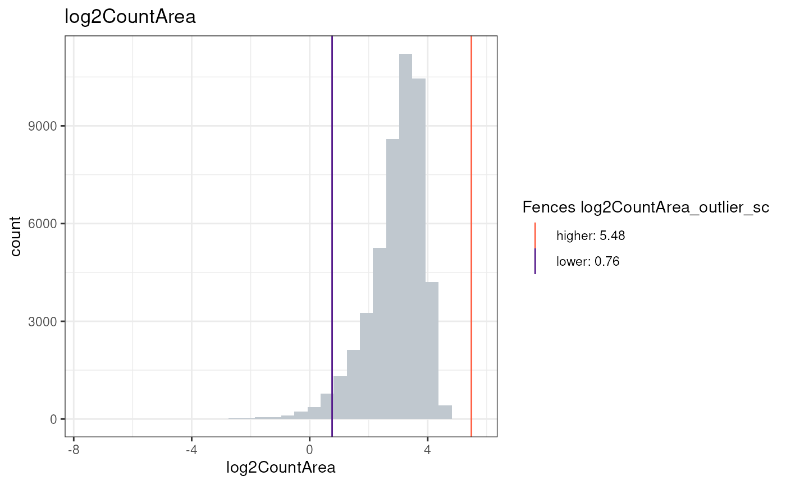
plotMetricHist(cos, "log2CountArea", useFences = "log2CountArea_outlier_mc")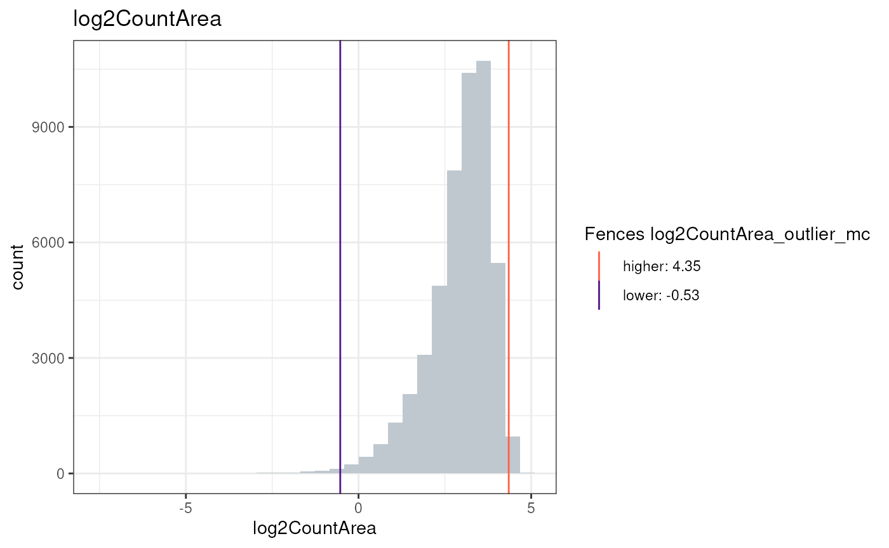
Or visualize the metric in the spatial context:
plotCentroids(cos, colourBy="log2CountArea")## Coordinate system already present.
## ℹ Adding new coordinate system, which will replace the existing one.
Now, we will simply compute SpaceTrooper’s aggregated QC score and keep the cells that pass the threshold. More details will be provided once the paper will be published (Banzi , Righelli et al., in preparation).
cos <- computeQCScore(cos)## Metric log2Ctrl_total_ratio produced NA skewness values.It will be removed from the QC score formula.
plotCentroids(cos, colourBy="QC_score")## Coordinate system already present.
## ℹ Adding new coordinate system, which will replace the existing one.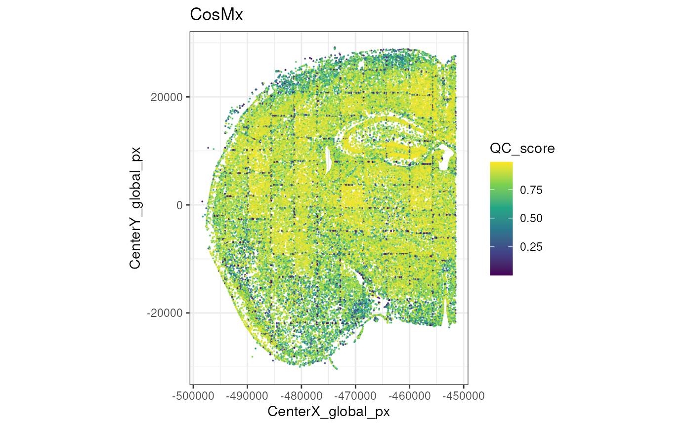
After that we can compute the QC flags, visualize them and filter out low-quality cells.
cos <- computeQCScoreFlags(cos, qsThreshold=0.5)
plotCentroids(cos, colourBy="low_qcscore") +
theme(legend.key.size=rel(0)) +
guides(col=guide_legend(override.aes=list(size=2)))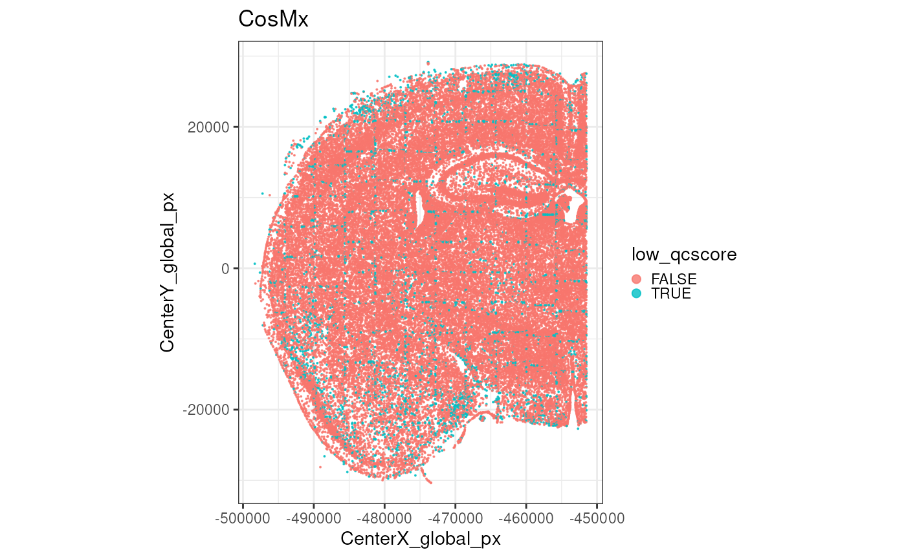
SpaceTrooper::plotMetricHist(cos, "QC_score")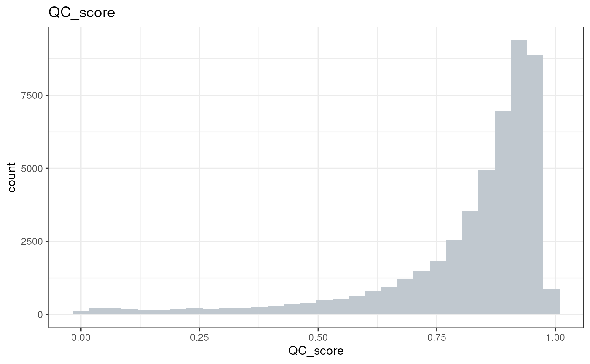
cos <- cos[, !cos$low_qcscore]Excercises:
- Explore the newly added QC metrics in
colData(cos). What do they represent? - Visualize the distribution of another QC metric, e.g., `log2NegativeArea
- Are you able to identify outlier cells based on this metric? how you visualize them?
- Visualize the spatial distribution of another QC metric.
- Compute the outliers for the QC_score (before filtering low qc cells) using both methods (sc and mc). How many cells are flagged as low quality by each method?
Processing
For the sake of runtime and laptop phisical limitations, we will perform downstream analyses only on a small portion of the tissue, defined by the following FOVs:
fs <- c(72:74, 90:92, 97:99, 114:116)
plotZoomFovsMap(cos, fovs=fs)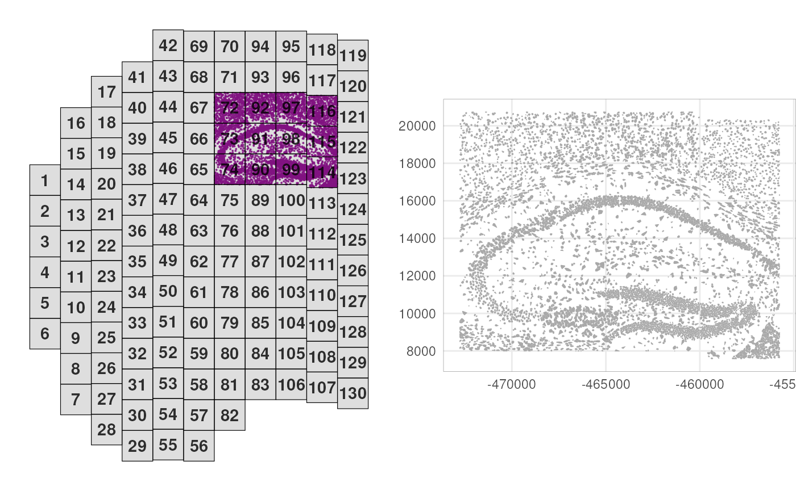
sub <- cos[, cos$fov %in% fs]Next, we’ll log-normalize counts by area, and perform principal component analysis (PCA) on all 950 RNA targets:
# cell area-based normalization
logcounts(sub) <- sweep(assay(sub), 2, sub$Area, `/`)
# principal component analysis
sub <- runPCA(sub)Let’s visualize the expression of the first two principal components (PCs) in the spatial context.
# add PCs as cell metadata
pcs <- reducedDim(sub, "PCA")
colData(sub) <- cbind(colData(sub), pcs)
# visualize PCs 1 & 2 in space
plotCentroids(sub, colourBy="PC1") +
plotCentroids(sub, colourBy="PC2")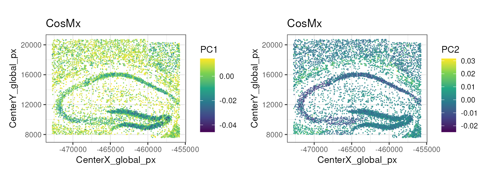
Annotation
Here, we use the @zeisel2015cell dataset as a reference to annotate the cell types with SingleR.
sceZ <- ZeiselBrainData()
sceZ <- logNormCounts(sceZ)
pred <- SingleR(test=sub, ref=sceZ, labels=sceZ$level1class, de.method="wilcox")
sub$SingleR_label <- factor(pred$pruned.labels)
nk <- nlevels(sub$SingleR_label)
pal <- hcl.colors(nk, "Spectral")
plotPolygons(sub,
colourBy="SingleR_label") +
scale_fill_manual(values=pal)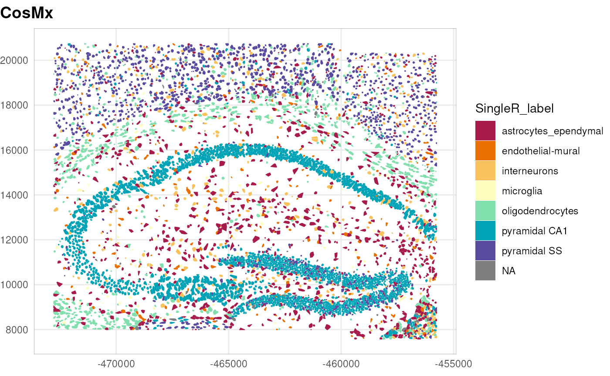
Note that the annotation performed here is a transfer label from a reference dataset that only partially matches with the tissue under study and purposely annotated at a coarse level (level 1). Ideally, one can use a more appropriate reference dataset, or better yet, build a custom reference from single-cell RNA-seq data of the same tissue.
A different, often preferable, approach consists in using, in addition to the gene expression profiles, the image data and the spatial context of the cells. InSituType [@danaher2022insitutype] provides a framework to perform such analysis in unsupervised, semi-supervised, or supervised manners. Please refer to its documentation for more details.
Marker genes
Here, we identify cluster-related spatially-variable genes using the DESpace package [@Cai2024-DESpace]. In this workflow, we use this as a way to identify marker genes for the cell types annotated above.
## gene_id LR logCPM PValue FDR
## Itm2a Itm2a 2596.761 11.03859 0 0
## Flt1 Flt1 2601.543 11.05386 0 0
## Cldn5 Cldn5 2825.269 11.11885 0 0
## Gja1 Gja1 4982.193 11.29054 0 0
## Gpr37l1 Gpr37l1 4989.928 11.30344 0 0
## Bcan Bcan 3567.078 11.61163 0 0We focus on the genes with the smallest p-values, and compute the average expression of each gene in each cell type. We can visualize this with a heatmap.
df <- res$gene_results
gs <- df$gene_id[rank(df$PValue, ties.method="min") == 1]
mu <- t(apply(counts(sub)[gs, ], 1, tapply, sub$SingleR_label, mean))
pheatmap(t(mu),
scale="column", show_colnames=FALSE,
cluster_rows=TRUE, cluster_cols=TRUE,
main="Average expression of top SVGs per cell type")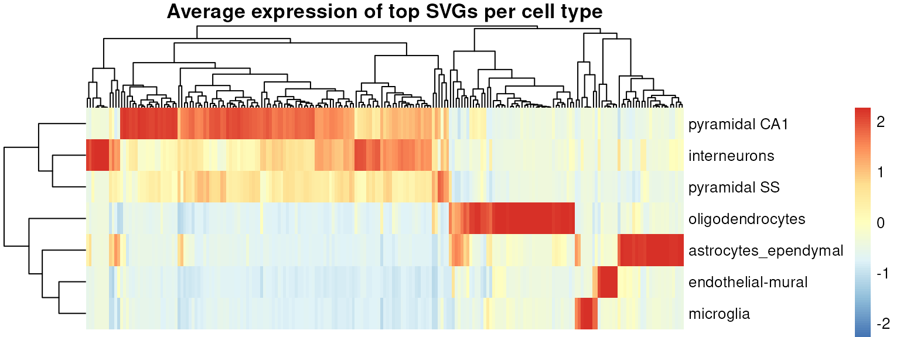
We can also visualize the spatial distribution of some of these genes, e.g., Mbp that marks oligodendrocytes, and Calm1, Calm2, and Snap25 that mark different subsets of neurons. Note also how some genes show a difference of expression within the pyramidal neuron population, suggesting the presence of subtypes.
gs <- c("Mbp", "Calm1", "Calm2", "Snap25")
ps <- lapply(gs, \(g) {
sub[[g]] <- logcounts(sub)[g, ]
plotPolygons(sub, colourBy=g) + ggtitle(g)
})
dy <- range(logcounts(sub)[gs, ])
wrap_plots(ps, guides="collect") &
scale_fill_viridis_c(
"expression",
limits=dy, breaks=dy,
labels=c("low", "high")) &
theme(plot.title=element_text(hjust=0.5))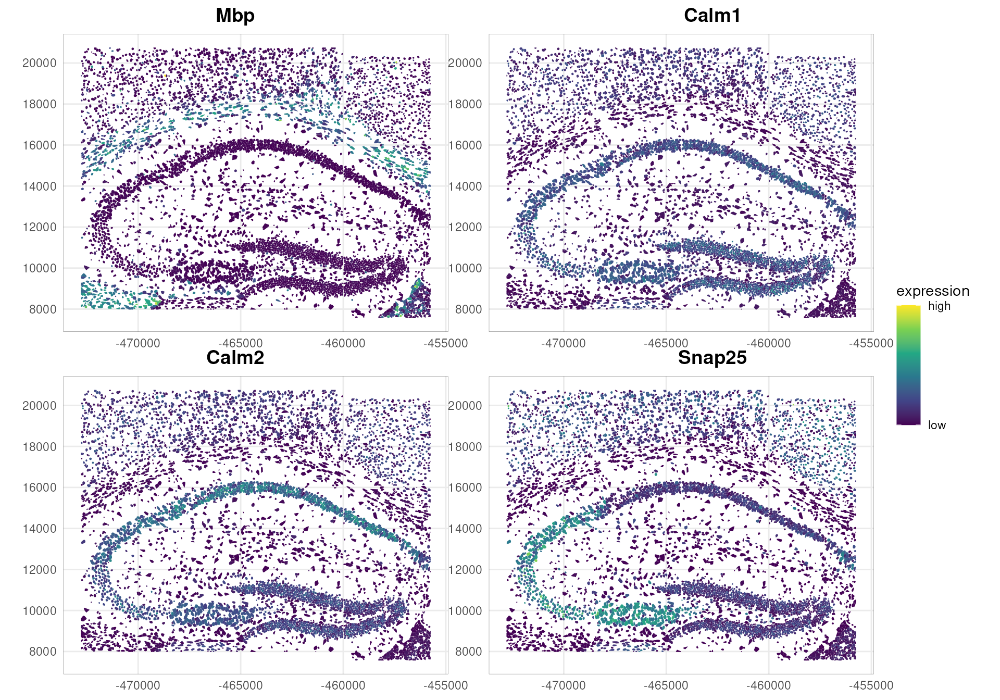
Neighborhood-based gene expression analyses
We start by creating a cell neighborhood graph, based on a distance threshold of 50 microns. To do so, we use the SpatialFeatureExperiment package [@Moses2023-Voyager].
Note that an alternative approach uses the nearest neighbors (kNN) method to define the neighborhood graph. Here, we prefer to use a distance-based approach, as it better captures the morphological structure of this tissue area.
# convert to SFE & remove cells with NA labels
sfe <- as(sub, "SpatialFeatureExperiment")
sfe <- sfe[, !is.na(sfe$SingleR_label)]
# this is needed for Voyager's plotting functions
colnames(sfe$polygons)[6] <- "geometry"
st_geometry(sfe$polygons) <- "geometry"
colGeometry(sfe, "cellSeg") <- sfe$polygons
colGraph(sfe, "poly2nb") <-
findSpatialNeighbors(sfe,
type="cellSeg",
method="poly2nb",
style="W", snap=50)
plotColGraph(sfe,
colGraphName="poly2nb",
colGeometryName="cellSeg") +
theme_void()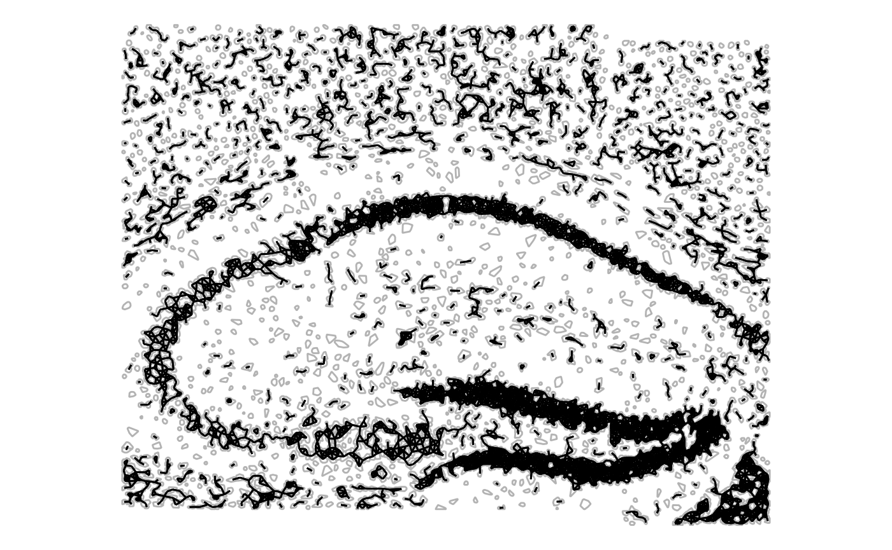
Given the neighborhood graph, we can calculate local measures of spatial autocorrelation for specific genes in the dataset.
Here, we focus on Snap25 and Calm1, neuronal marker genes identified above that show interesting spatial expression distributions (see above). First, we compute the local Moran’s I coefficient.
gs <- c("Snap25", "Calm1")
sfe <- runUnivariate(sfe,
features=gs,
type="localmoran",
zero.policy=TRUE,
colGraphName="poly2nb",
colGeometryName="cellSeg")
plotLocalResult(sfe,
name="localmoran",
features=gs, ncol=2,
colGeometryName="cellSeg",
divergent=TRUE, diverge_center=0)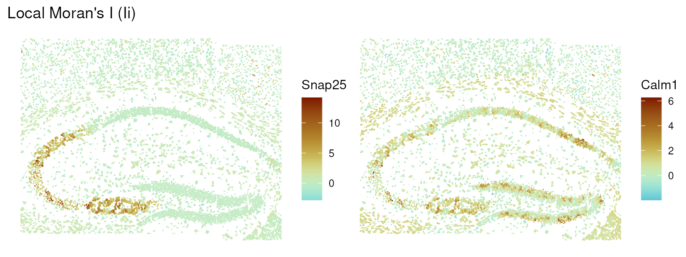
From the plots, we can see that Snap25 shows positive spatial autocorrelation in a very localized part of the tissue, while Calm1 shows a more diffuse autocorrelation structure.
We focus on Snap25 and visualize its autocorrelation structure using a Moran scatter plot, which shows the relationship between the expression of the gene in each cell and the average expression in its neighbors.
sfe <- runUnivariate(sfe,
feature=gs[1],
zero.policy=TRUE,
type="moran.plot",
colGraphName="poly2nb",
colGeometryName="cellSeg")
moranPlot(sfe,
feature=gs[1],
graphName="poly2nb",
swap_rownames="symbol")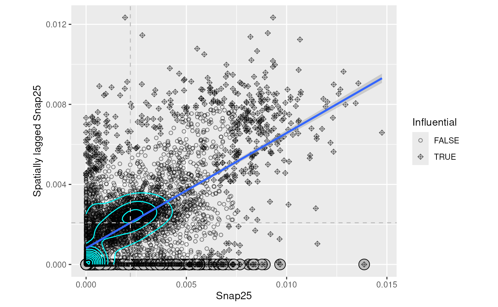
We can then classify cells based on the significance of their local Moran’s I values, and visualize the resulting clusters in the spatial context.
res <- localResults(sfe)[["localmoran"]][[1]]
res$locClust <- with(res, ifelse(
`-log10p_adj` > -log10(0.05),
as.character(mean), "non-siginificant"))
localResults(sfe)[["localmoran"]][[1]] <- res
plotLocalResult(sfe,
features=gs[1],
name="localmoran",
attribute="locClust",
colGeometryName="cellSeg")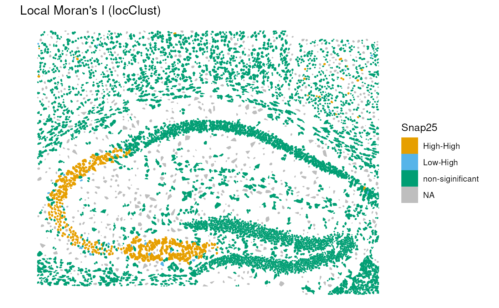
In this case, we can see a significant positive autocorrelation in the lower left part of the structure, while the rest of the tissue does not show significant autocorrelation.
Note that other local spatial autocorrelation measures, such as Geary’s C coefficient and Getis-Ord statistic, as well as their global versions can be used for similar analyses [@Emons2025-pasta,@Moses2023-Voyager].
Cell-cell interactions
Joint counts
We can also use the neighborhood graph to investigate cell-cell interactions between different cell types annotated above. Here, we use the join count statistic implemented in the spdep package to quantify the tendency of cells of different types to be neighbors.
jc <- joincount.multi(sfe$SingleR_label, colGraph(sfe, "poly2nb"), zero.policy=TRUE)
head(jc[order(abs(jc[, "z-value"]), decreasing=TRUE), ])## Joincount Expected Variance z-value
## Jtot 1132.15707 2494.52543 265.87369 -83.55200
## pyramidal CA1:pyramidal CA1 735.66944 351.21205 62.92504 48.46592
## pyramidal CA1:oligodendrocytes 22.39901 303.28546 75.62290 -32.30012
## oligodendrocytes:oligodendrocytes 196.71667 65.35907 19.34973 29.86192
## pyramidal CA1:astrocytes_ependymal 97.55301 379.29404 92.67327 -29.26664
## pyramidal SS:pyramidal CA1 195.38757 445.19310 106.83889 -24.16781We can see that there is a strong tendency for cells of the same type to be neighbors (high positive z-values). There are also some interesting negative interactions between different cell types: e.g., pyramidal CA1 tend to be away from oligodendrocytes and astrocytes. This highlights the compartimentalized structure of the brain tissue.
Point-pattern analysis
A similar result can be obtained using point-pattern analysis, such as Ripley’s K function, and similar methods, using for instance the spatialFDA package.
Here, we use Besag’s L function to quantify the interaction between pyramidal CA1 neurons, and the interaction between them and oligodendrocytes (cross-L function).
Other methods are available, such as Ripley’s K function, and the pair correlation function [@Emons2025-pasta]. Note that here we are making the quite strong assuption of homogeneity of the point pattern, which is irrealistic in tissue biology. In particular, CSR is a naïve null model that does not take into account tissue structure and cell density variations across the tissue. Hence, these plots should be considered as exploratory analyses rather than formal hypothesis tests.
res <- calcMetricPerFov(
spe=sub, fun="Lest",
subsetby="sample_id",
marks="SingleR_label",
selection="pyramidal CA1",
rSeq=seq(0, 500, l=100),
by="sample_id", ncores=1)
plotMetricPerFov(res,
theo=TRUE, correction="iso",
x="r", imageId="sample_id")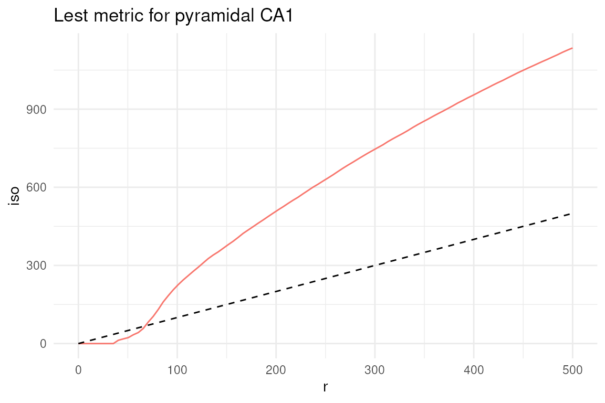
In this type of plots, the dashed line represents the theoretical value of the metric under complete spatial randomness (CSR). Values above this line indicate clustering, while values below indicate dispersion. Here, we can see that pyramidal CA1 neurons tend to cluster together, as expected.
Note that the L-function lays below the CSR line for the first 50 microns, which is a consequence of the cell segmentation that does not allow cells to overlap, indicating the impossibility of finding two cells at a distance smaller than their size.
While in the plot above we focused on a single cell type, we can also investigate the interaction between two different cell types, e.g., pyramidal CA1 neurons and oligodendrocytes, using the cross-L function.
res <- calcMetricPerFov(
spe=sub, fun="Lcross",
subsetby="sample_id",
marks="SingleR_label",
selection=c("pyramidal CA1", "oligodendrocytes"),
rSeq=seq(0, 500, l=100),
by="sample_id", ncores=1)
plotMetricPerFov(res,
theo=TRUE, correction="iso",
x="r", imageId="sample_id")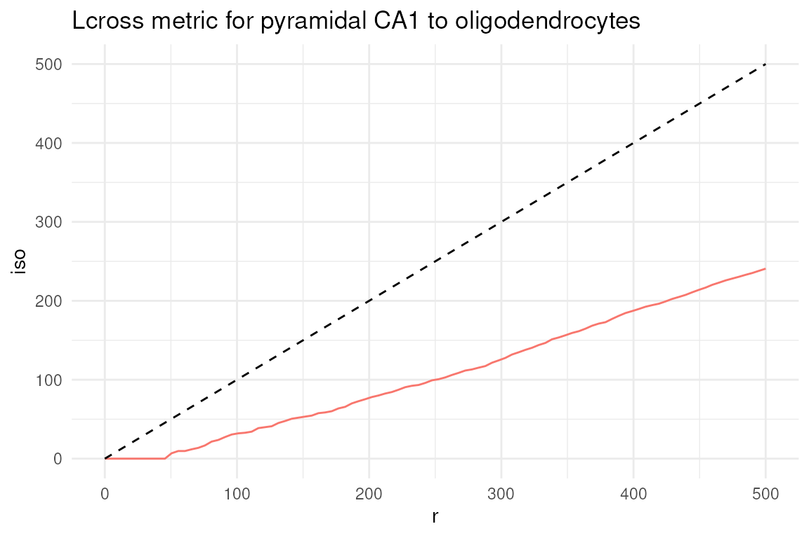
In this case, we can see that pyramidal CA1 neurons and oligodendrocytes tend to be spatially segregated, as indicated by the cross-L function being below the CSR line.
We only briefly discussed cell-cell interactions and spatial exploratory analyses here: we refer interested readers to the comprehensive documentation and tutorials available at the pasta and Voyager websites.
Session Info
## R version 4.5.2 (2025-10-31)
## Platform: x86_64-pc-linux-gnu
## Running under: Ubuntu 24.04.3 LTS
##
## Matrix products: default
## BLAS: /usr/lib/x86_64-linux-gnu/openblas-pthread/libblas.so.3
## LAPACK: /usr/lib/x86_64-linux-gnu/openblas-pthread/libopenblasp-r0.3.26.so; LAPACK version 3.12.0
##
## locale:
## [1] LC_CTYPE=en_US.UTF-8 LC_NUMERIC=C
## [3] LC_TIME=en_US.UTF-8 LC_COLLATE=en_US.UTF-8
## [5] LC_MONETARY=en_US.UTF-8 LC_MESSAGES=en_US.UTF-8
## [7] LC_PAPER=en_US.UTF-8 LC_NAME=C
## [9] LC_ADDRESS=C LC_TELEPHONE=C
## [11] LC_MEASUREMENT=en_US.UTF-8 LC_IDENTIFICATION=C
##
## time zone: Etc/UTC
## tzcode source: system (glibc)
##
## attached base packages:
## [1] stats4 stats graphics grDevices utils datasets methods
## [8] base
##
## other attached packages:
## [1] Voyager_1.12.0 spdep_1.4-1
## [3] spData_2.3.4 SpatialFeatureExperiment_1.12.1
## [5] spatialFDA_1.2.0 SpatialExperimentIO_1.2.0
## [7] SpaceTrooper_1.0.0 SpatialExperiment_1.20.0
## [9] SingleR_2.12.0 sf_1.0-22
## [11] scRNAseq_2.24.0 scrapper_1.4.0
## [13] scater_1.38.0 scuttle_1.20.0
## [15] SingleCellExperiment_1.32.0 SummarizedExperiment_1.40.0
## [17] Biobase_2.70.0 GenomicRanges_1.62.0
## [19] Seqinfo_1.0.0 IRanges_2.44.0
## [21] S4Vectors_0.48.0 BiocGenerics_0.56.0
## [23] generics_0.1.4 MatrixGenerics_1.22.0
## [25] matrixStats_1.5.0 pheatmap_1.0.13
## [27] patchwork_1.3.2 OSTA.data_1.2.1
## [29] ggplot2_4.0.1 DESpace_2.2.1
##
## loaded via a namespace (and not attached):
## [1] R.methodsS3_1.8.2 tiff_0.1-12
## [3] goftest_1.2-3 Biostrings_2.78.0
## [5] HDF5Array_1.38.0 TH.data_1.1-5
## [7] vctrs_0.6.5 spatstat.random_3.4-3
## [9] digest_0.6.39 png_0.1-8
## [11] shape_1.4.6.1 proxy_0.4-27
## [13] pcaPP_2.0-5 gypsum_1.6.0
## [15] ggrepel_0.9.6 deldir_2.0-4
## [17] httpcode_0.3.0 alabaster.sce_1.10.0
## [19] magick_2.9.0 hdrcde_3.4
## [21] MASS_7.3-65 pkgdown_2.2.0
## [23] scico_1.5.0 foreach_1.5.2
## [25] withr_3.0.2 xfun_0.54
## [27] ggpubr_0.6.2 survival_3.8-3
## [29] memoise_2.0.1 crul_1.6.0
## [31] s2_1.1.9 ggbeeswarm_0.7.2
## [33] systemfonts_1.3.1 zoo_1.8-14
## [35] ragg_1.5.0 R.oo_1.27.1
## [37] DEoptimR_1.1-4 Formula_1.2-5
## [39] osfr_0.2.9 KEGGREST_1.50.0
## [41] httr_1.4.7 rstatix_0.7.3
## [43] restfulr_0.0.16 rhdf5filters_1.22.0
## [45] rhdf5_2.54.0 spatialreg_1.4-2
## [47] UCSC.utils_1.6.0 units_1.0-0
## [49] curl_7.0.0 ScaledMatrix_1.18.0
## [51] h5mread_1.2.1 polyclip_1.10-7
## [53] ExperimentHub_3.0.0 SparseArray_1.10.3
## [55] fftwtools_0.9-11 desc_1.4.3
## [57] pracma_2.4.6 evaluate_1.0.5
## [59] S4Arrays_1.10.0 BiocFileCache_3.0.0
## [61] glmnet_4.1-10 irlba_2.3.5.1
## [63] colorspace_2.1-2 filelock_1.0.3
## [65] isoband_0.2.7 spatstat.data_3.1-9
## [67] magrittr_2.0.4 viridis_0.6.5
## [69] lattice_0.22-7 spatstat.geom_3.6-1
## [71] robustbase_0.99-6 triebeard_0.4.1
## [73] XML_3.99-0.20 cowplot_1.2.0
## [75] class_7.3-23 pillar_1.11.1
## [77] nlme_3.1-168 iterators_1.0.14
## [79] EBImage_4.52.0 compiler_4.5.2
## [81] beachmat_2.26.0 RSpectra_0.16-2
## [83] stringi_1.8.7 tensor_1.5.1
## [85] GenomicAlignments_1.46.0 fda_6.3.0
## [87] crayon_1.5.3 abind_1.4-8
## [89] BiocIO_1.20.0 locfit_1.5-9.12
## [91] sp_2.2-0 bit_4.6.0
## [93] terra_1.8-80 sandwich_3.1-1
## [95] dplyr_1.1.4 multcomp_1.4-29
## [97] codetools_0.2-20 textshaping_1.0.4
## [99] BiocSingular_1.26.1 bslib_0.9.0
## [101] e1071_1.7-16 alabaster.ranges_1.10.0
## [103] fds_1.8 splines_4.5.2
## [105] Rcpp_1.1.0 dbplyr_2.5.1
## [107] sparseMatrixStats_1.22.0 knitr_1.50
## [109] blob_1.2.4 BiocVersion_3.22.0
## [111] AnnotationFilter_1.34.0 fs_1.6.6
## [113] DelayedMatrixStats_1.32.0 ggsignif_0.6.4
## [115] tibble_3.3.0 Matrix_1.7-4
## [117] statmod_1.5.1 tweenr_2.0.3
## [119] pkgconfig_2.0.3 tools_4.5.2
## [121] cachem_1.1.0 cigarillo_1.0.0
## [123] RSQLite_2.4.4 viridisLite_0.4.2
## [125] DBI_1.2.3 fastmap_1.2.0
## [127] rmarkdown_2.30 scales_1.4.0
## [129] grid_4.5.2 Rsamtools_2.26.0
## [131] broom_1.0.10 AnnotationHub_4.0.0
## [133] sass_0.4.10 coda_0.19-4.1
## [135] BiocManager_1.30.27 LearnBayes_2.15.1
## [137] carData_3.0-5 alabaster.schemas_1.10.0
## [139] farver_2.1.2 mgcv_1.9-4
## [141] wk_0.9.4 yaml_2.3.10
## [143] deSolve_1.40 rtracklayer_1.70.0
## [145] cli_3.6.5 purrr_1.2.0
## [147] lifecycle_1.0.4 rainbow_3.8
## [149] arrow_22.0.0 mvtnorm_1.3-3
## [151] bluster_1.20.0 backports_1.5.0
## [153] DropletUtils_1.30.0 BiocParallel_1.44.0
## [155] gtable_0.3.6 rjson_0.2.23
## [157] parallel_4.5.2 limma_3.66.0
## [159] jsonlite_2.0.0 edgeR_4.8.0
## [161] bitops_1.0-9 bit64_4.6.0-1
## [163] assertthat_0.2.1 alabaster.matrix_1.10.0
## [165] spatstat.utils_3.2-0 BiocNeighbors_2.4.0
## [167] urltools_1.7.3.1 jquerylib_0.1.4
## [169] alabaster.se_1.10.0 dqrng_0.4.1
## [171] zeallot_0.2.0 spatstat.univar_3.1-5
## [173] R.utils_2.13.0 lazyeval_0.2.2
## [175] alabaster.base_1.10.0 htmltools_0.5.8.1
## [177] rappdirs_0.3.3 ensembldb_2.34.0
## [179] glue_1.8.0 httr2_1.2.1
## [181] XVector_0.50.0 RCurl_1.98-1.17
## [183] mclust_6.1.2 classInt_0.4-11
## [185] ks_1.15.1 jpeg_0.1-11
## [187] gridExtra_2.3 boot_1.3-32
## [189] igraph_2.2.1 R6_2.6.1
## [191] tidyr_1.3.1 labeling_0.4.3
## [193] GenomicFeatures_1.62.0 cluster_2.1.8.1
## [195] Rhdf5lib_1.32.0 memuse_4.2-3
## [197] GenomeInfoDb_1.46.0 DelayedArray_0.36.0
## [199] tidyselect_1.2.1 vipor_0.4.7
## [201] ProtGenerics_1.42.0 ggforce_0.5.0
## [203] car_3.1-3 AnnotationDbi_1.72.0
## [205] sfheaders_0.4.5 rsvd_1.0.5
## [207] KernSmooth_2.23-26 S7_0.2.1
## [209] BiocStyle_2.38.0 data.table_1.17.8
## [211] htmlwidgets_1.6.4 RColorBrewer_1.1-3
## [213] rlang_1.1.6 spatstat.sparse_3.1-0
## [215] spatstat.explore_3.6-0 ggnewscale_0.5.2
## [217] beeswarm_0.4.0